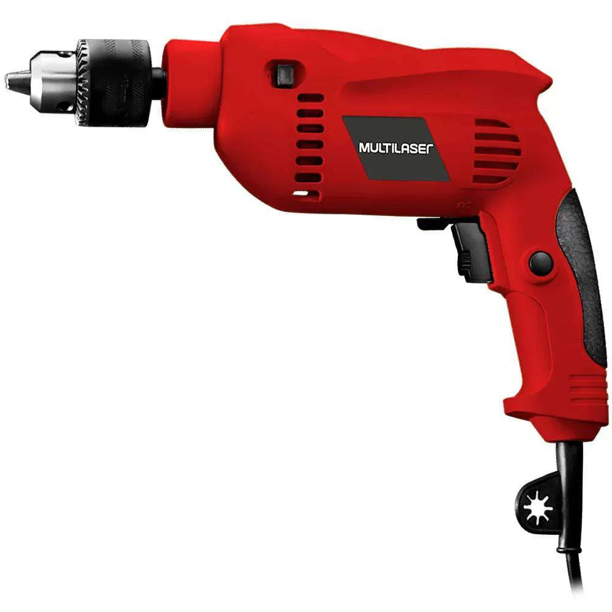
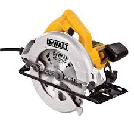
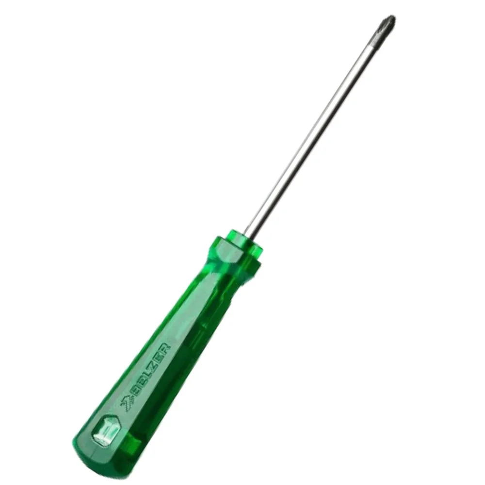
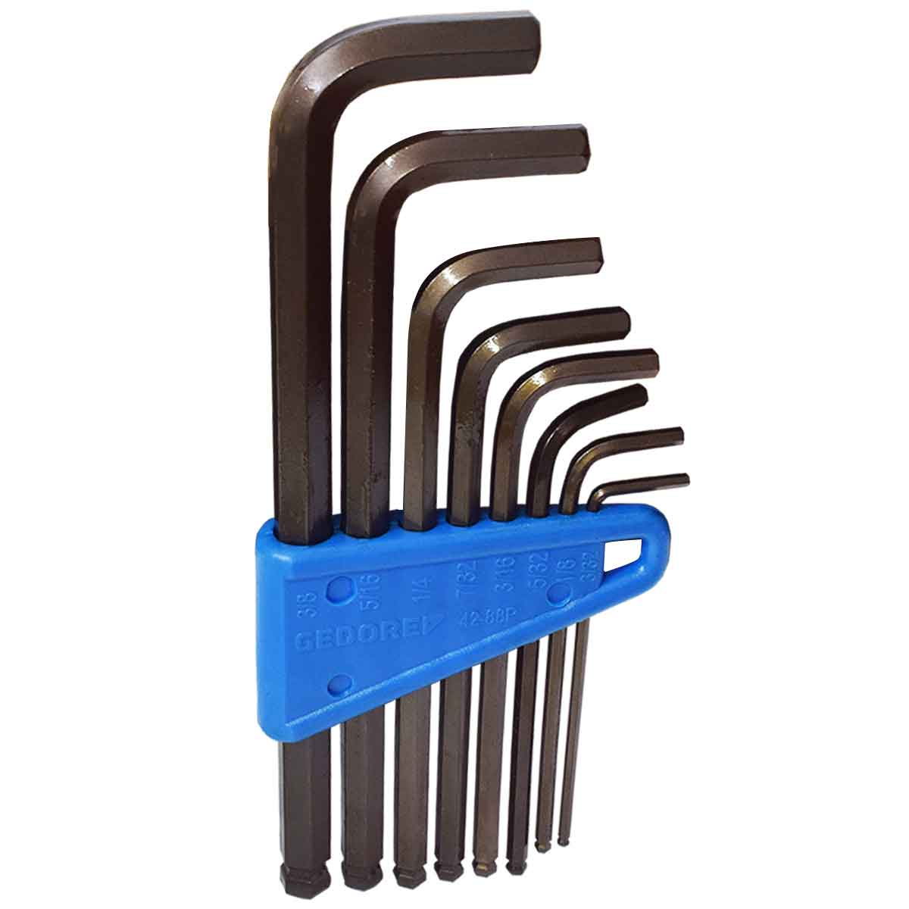
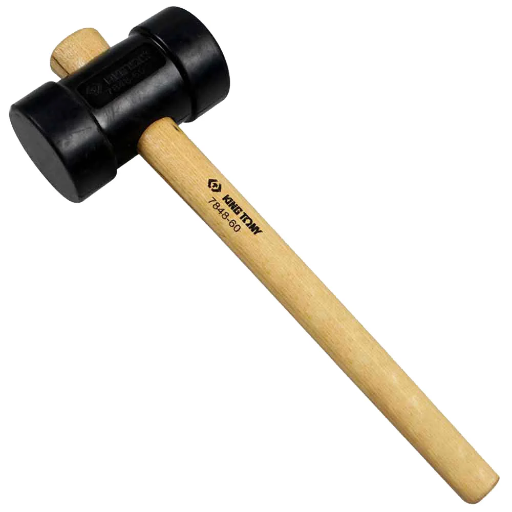

Nossos Produtos
Na ToolPro, oferecemos uma ampla gama de ferramentas para atender às necessidades de profissionais e entusiastas. Nossa seleção inclui desde ferramentas manuais até equipamentos elétricos, todos de marcas renomadas e com a garantia de qualidade. Conheça alguns dos nossos principais produtos:
1. Furadeira Elétrica
Ideal para perfurações em madeira, metal e plástico. Com potência de 600W, esta furadeira é perfeita para qualquer projeto de construção ou reforma.
2. Serra Circular
Uma ferramenta essencial para cortes precisos em diversos materiais. Com lâmina de 7 1/4", é ideal para carpinteiros e profissionais de reformas.
3. Chave de Fenda com Cabo Ergonomico
Esta chave de fenda possui um cabo antiderrapante e é projetada para proporcionar conforto e controle durante o uso, tornando-a ideal para trabalhos manuais.
4. Conjunto de Chaves Allen
Um conjunto de chaves allen em diferentes tamanhos, fabricadas em aço de alta resistência, perfeito para montagem e ajustes em máquinas e móveis.
5. Martelo de Borracha
Este martelo de borracha é ideal para trabalhos que exigem delicadeza. Não danifica as superfícies, sendo perfeito para carpintaria e montagem de móveis.